하이브리드 아키텍처: Supabase와 Spring Boot를 통한 두 세계의 최적 조합
게시: 14 January 2026
Supabase의 단순함과 Spring Boot의 강력함 사이에서 선택하는 대신, 왜 두 가지를 결합하지 않을까요? 각 기술의 장점을 활용하는 하이브리드 아키텍처를 살펴보세요.
- 똑
-
[]
현대 건축의 거짓 딜레마
정적 프론트엔드를 사용해 현대적인 애플리케이션을 구축할 때, 종종 이진 선택에 직면하게 됩니다:
-
백엔드-아즈-어-서비스 솔루션에 모든 것을 걸다(Supabase, Firebase) - 간단하지만 제한적인
-
완전한 백엔드 구축(Spring Boot, Node.js) - 강력하지만 복잡한
이 선택은 허위의 딜레마다. 하이브리드 아키텍처는 세 번째 방법을 제시한다: 각 기술이 뛰어난 곳에서 그 기술을 사용하라
건축적 비전
전통적인 아키텍처: 모놀리식
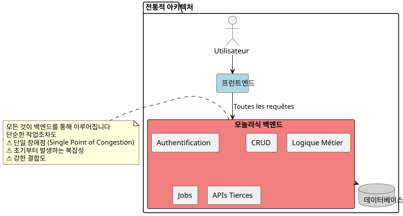
이 접근 방식에서는 가장 단순한 작업(게시글 읽기, 댓글 작성)도 백엔드를 거쳐야 합니다. 첫날부터 복잡성의 비용을 지불하게 됩니다.
BaaS 아키텍처: 모든 대표
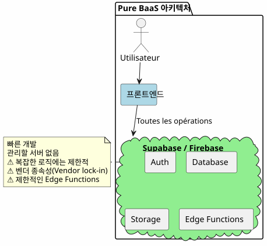
반면에, BaaS에 모든 것을 위임하는 것은 처음에는 매력적이지만, 비즈니스 로직이 복잡해지면 바로 그 한계를 드러냅니다.
하이브리드 아키텍처: 책임 분리
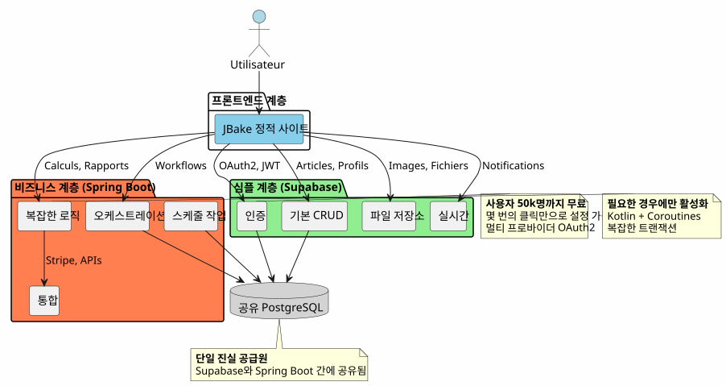
하이브리드 아키텍처는 복잡성과 운영의 성격에 따라 책임을 명확히 구분한다.
디자인 원칙
원칙 1: 간단하게 시작하고, 지혜롭게 발전시키기
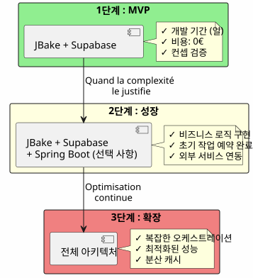
필요하지 않다면 Spring Boot을 만들지 마세요.Supabase로 시작하고, 복잡성이 이를 정당화할 때 Spring Boot을 추가하세요.
원칙 2: 운영의 성질에 따른 분리

원칙 3: 하나의 진실한 출처
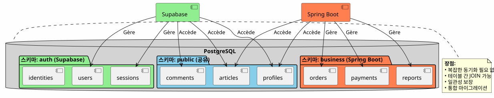
같은 PostgreSQL 인스턴스를 공유함으로써 Supabase와 Spring Boot는 복잡한 동기화 없이 동일한 데이터에서 작업합니다.
플로우 오케스트레이션
플럭스 1: 중앙 집중식 인증
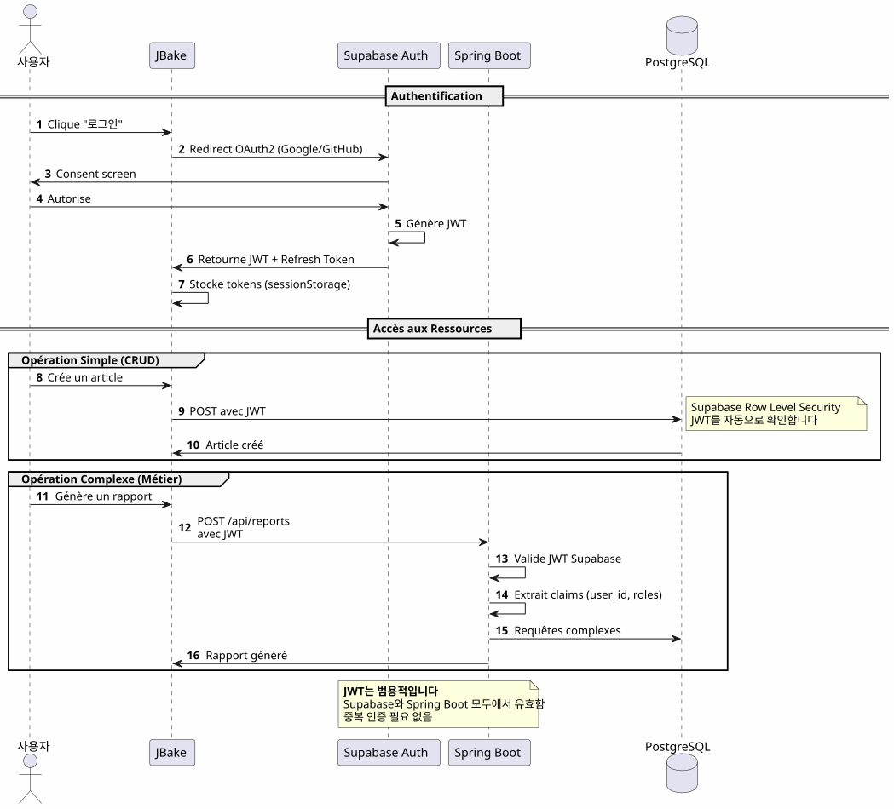
핵심 포인트하나의 인증 프로세스, 하나의 JWT, 어디서든 사용 가능
Flux 2: 복잡한 비즈니스 프로세스의 오케스트레이션
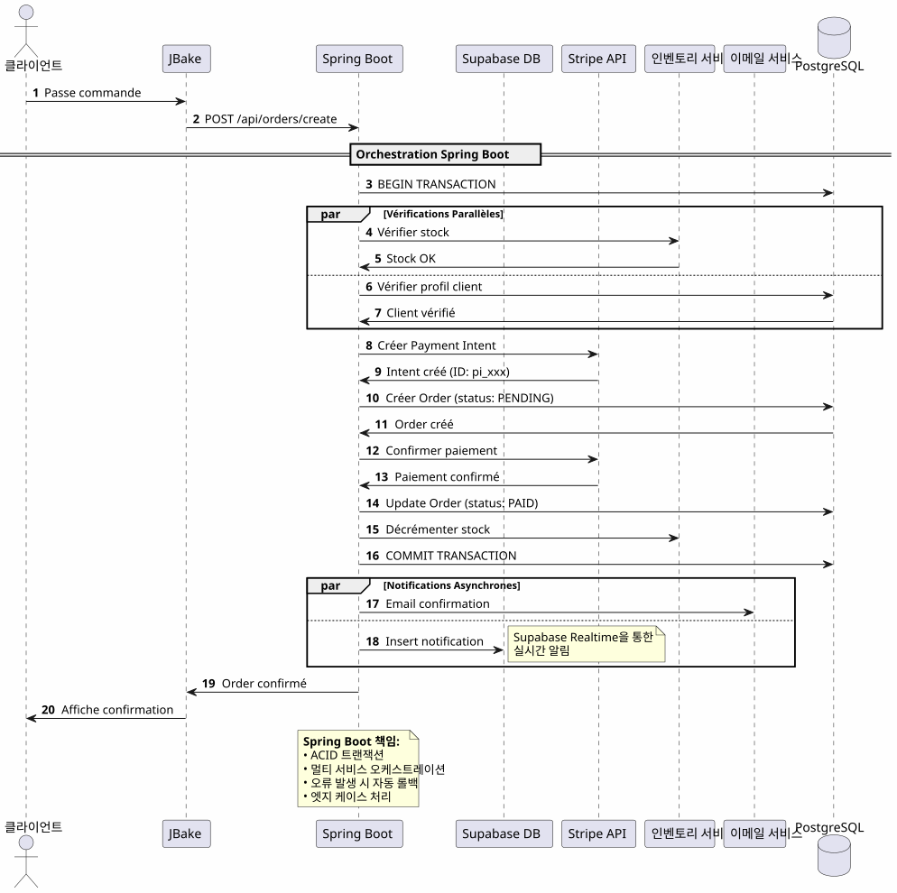
Spring Boot가 제공하는 것: 신뢰성 있는 복잡한 프로세스를 여러 시스템에 걸쳐 구현하면서 트랜잭션 보증을 제공하는 오케스트레이션.
플럭스 3: 예정된 작업 및 동기화
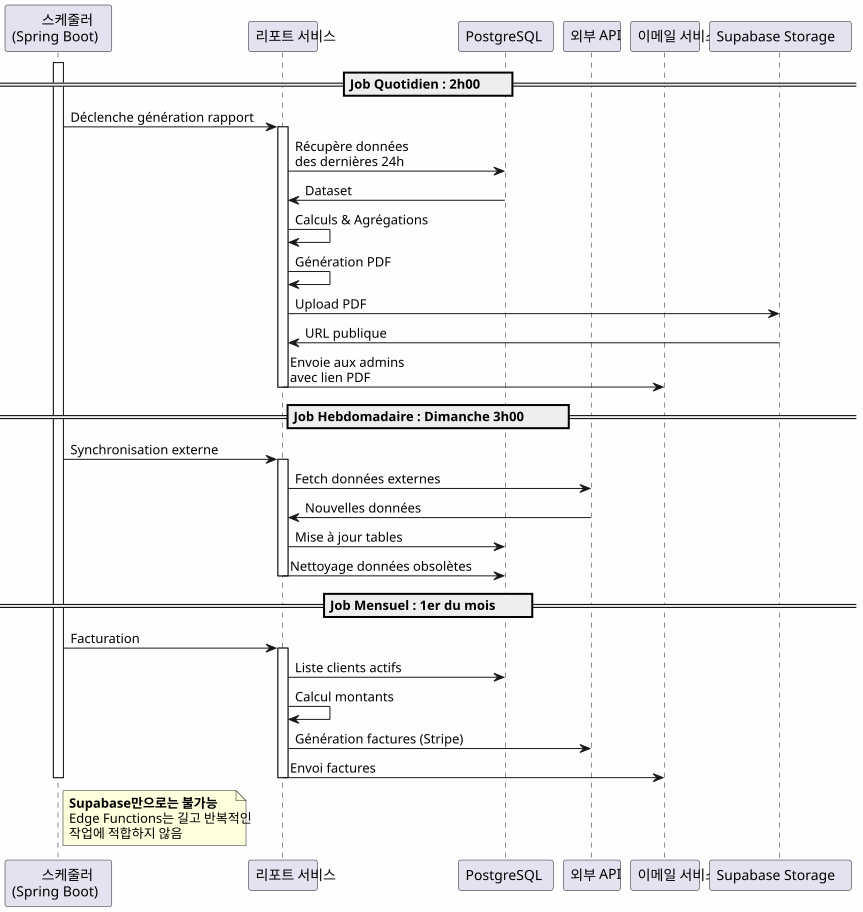
Spring Boot가 제공하는 것: 신뢰할 수 있는 예약된 작업, 상태 관리, 자동 재시도, 그리고 보장된 실행.
의사결정 매트릭스
Supabase를 언제 사용해야 하나요?

Spring Boot을 언제 사용해야 하나?

프로젝트 유형별 아키텍처 예시
블로그 / 포트폴리오
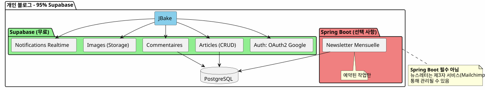
판결: 100% Supabase면 충분합니다.
SaaS 애플리케이션
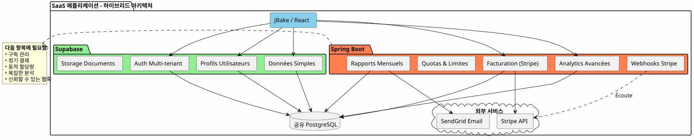
판결필요한 하이브리드 아키텍처. 핵심 부분은 Supabase를 사용하고, 중요한 부분(결제, 청구)에는 Spring Boot를 사용합니다.
이커머스
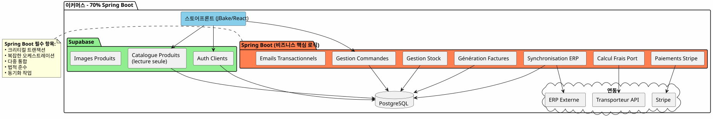
판결: Spring Boot 필수적입니다. Supabase은 인증 및 카탈로그에만 사용.
점진적 마이그레이션 전략
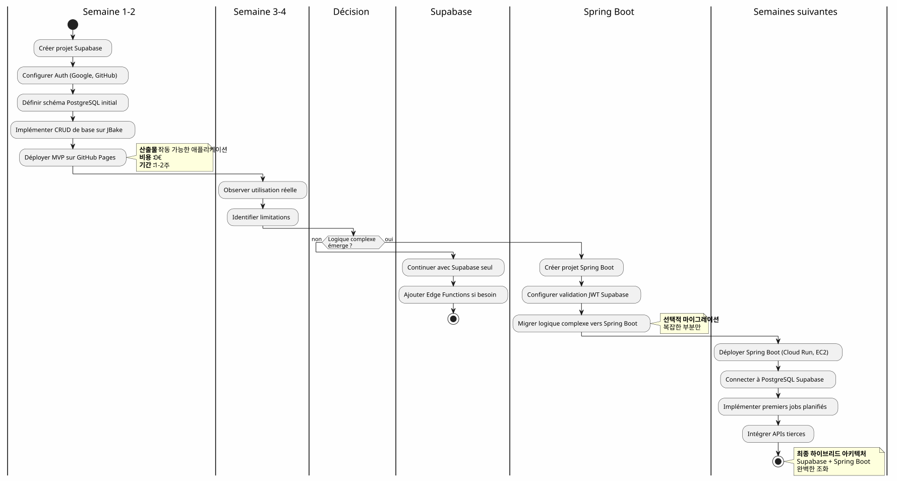
비용 및 운영 고려 사항
비용 구조
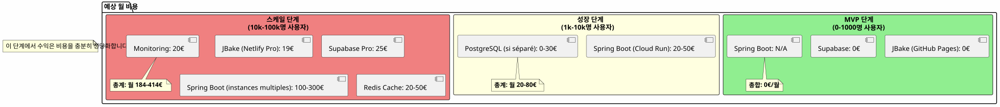
운영 책임
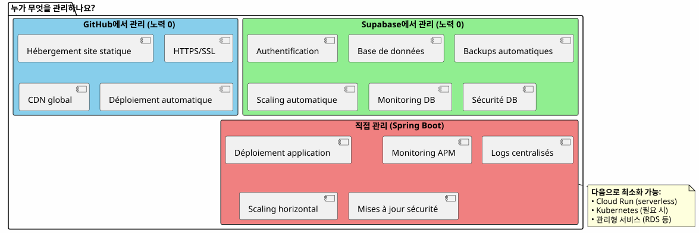
결론: 완벽한 균형
Supabase + Spring Boot 하이브리드 아키텍처는 타협이 아니며, 그것은시너지.
기억해야 할 원칙들

이 아키텍처를 언제 선택해야 할까요?
✅ 이 아키텍처는 다음과 같은 경우에 이상적입니다 :
-
당신은 빠르게 시작하고 싶습니다 (MVP는 개월이 아닌 일 단위입니다)
-
당신은 비즈니스 복잡성 성장을 예상합니다.
-
초기 비용을 최소화하고 싶습니다.
-
PostgreSQL을 좋아하고 단일 진실의 원천을 원합니다.
-
당신은 비즈니스 로직을 위해 Kotlin과 코루틴을 좋아합니다.
-
전체적인 벤더 락인을 피하고 싶으세요?
❌ 다음 조건이면 이 아키텍처는 적합하지 않습니다:
-
귀하의 프로젝트는 간단하며 그대로 유지됩니다 (개인 블로그 → 100% Supabase이면 충분합니다)
-
당신은 이미 확립된 백엔드 스택을 숙지하고 있습니다.
-
당신은 전통적인 모놀리스를 선호합니다
-
.NET, Python, 또는 다른 백엔드 언어가 필요합니다.
최종 전체 비전
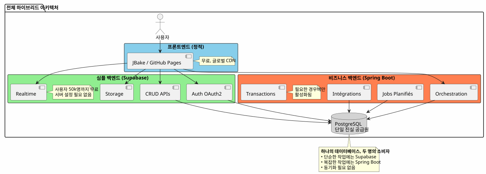
두 세계의 최고
이 아키텍처는 당신에게 제공합니다:
🚀 서프베이스의 속도
-
시간 단위로 시작하는 것이지, 주 단위가 아닙니다.
-
몇 번의 클릭으로 간편한 OAuth2 인증
-
자동으로 생성된 REST API
-
서버 무설정
💪 Spring Boot의 힘
-
코틀린과 코루틴을 이용한 우아한 비동기 코드
-
복잡한 업무 프로세스 오케스트레이션
-
신뢰할 수 있는 예약된 작업
-
ACID 트랜잭션 보장
-
완전한 스프링 생태계
💰 진보적인 경제
-
0€로 시작하고 확인하기
-
성장과 함께 증가하는 비용
-
조기 과도한 엔지니어링 금지
🎯 건축적 유연성
-
재구축 없이 점진적인 마이그레이션
-
필요한 경우에만 Spring Boot 추가
-
전체적인 벤더 락인이 없습니다.
-
진화형 아키텍처
더 깊이 가기 위해
기술 자원
Supabase 문서 :
스프링 부트 문서 :
추가 조항 :
-
JWT를 사용한 API 보안
-
PostgreSQL 성능 최적화
-
점진적 마이그레이션 패턴
-
분산 아키텍처에서 오류 관리
실제 사용 사례
이 하이브리드 아키텍처는 다음과 같이 성공적으로 사용됩니다 :
-
SaaS B2B: Supabase 인증, Spring Boot 청구
-
마켓플레이스: 카탈로그 Supabase, 트랜잭션 Spring Boot
-
콘텐츠 플랫폼Supabase 글, Spring Boot 분석
-
내부 도구CRUD Supabase, Spring Boot 워크플로우
시작 체크리스트
Phase 1 - 기초 (1주)
-
Supabase 계정 만들기 - [ ] PostgreSQL 프로젝트 구성하기 - [ ] 인증 활성화 (Google, GitHub) - [ ] 초기 스키마 정의 - [ ] Row Level Security 설정 - [ ] JBake에서 API 테스트
Phase 2 - MVP (2-3주)
-
주요 페이지 구현 - [ ] OAuth2 인증 통합 - [ ] CRUD 폼 생성 - [ ] 파일용 Storage 설정 - [ ] GitHub Pages에 배포 - [ ] 실제 조건에서 테스트하기
Phase 3 - 진화 (필요에 따라)
-
복잡한 논리 필요 사항 식별 - [ ] 필요 시 Spring Boot 프로젝트 생성 - [ ] Supabase JWT 검증 구성 - [ ] Supabase PostgreSQL에 연결하기 - [ ] 복잡한 기능 마이그레이션 - [ ] 예약된 작업 구현 - [ ] Spring Boot 배포하기 (Cloud Run 등)
피해야 할 반패턴
❌ 하지 말아야 할 것 :
-
Supabase와 Spring Boot 사이에 데이터를 복제
-
두 개의 별도 PostgreSQL 데이터베이스를 생성
-
인증 직접 코딩하기
-
Spring Boot를 사용하여 간단한 CRUD를 구현하다
-
처음부터 과도하게 설계하다
-
Supabase의 Row Level Security 무시하기
✅ 더 나은 행동 :
-
하나의 PostgreSQL 데이터베이스 공유
-
Supabase가 인증을 관리하도록 두다
-
복잡성을 위해 Spring Boot만 사용
-
간단히 시작하고, 점차적으로 발전시키다
-
각 기술의 강점을 활용
-
데이터베이스 수준에서 RLS를 적용하여 보안하기
진화 전망
새로운 기능 추가
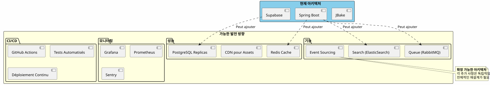
수평 스케일링
애플리케이션이 성장함에 따라 하이브리드 아키텍처는 자연스럽게 확장됩니다:
Supabase :
-
자동으로 수백만 건의 작업까지 확장
-
읽기 전용 복제본을 위한 읽기 성능
-
안전을 위한 시점 복구
Spring Boot:
-
로드 밸런서 뒤에 여러 인스턴스
-
무상태 설계는 수평 스케일링을 용이하게 한다.
-
필요에 따라 오케스트레이션을 위한 Kubernetes
PostgreSQL :
-
대용량 테이블 파티셔닝
-
연결 풀링 (PgBouncer)
-
샤딩이 정말로 필요할 때(드물게)
건축학적 증언
Startup SaaS (50k 사용자)
_ 우리는 100% Supabase로 시작했습니다. 5k 사용자 때, 우리는 Stripe 결제 처리와 월간 보고서를 위해서만 Spring Boot를 추가했습니다. 1년 후, 우리 운영의 80%는 여전히 Supabase를 통해 처리됩니다. Spring Boot는 오직 핵심 부분만 처리합니다. 이 분리 덕분에 우리는 재설계 없이 확장할 수 있었습니다. _
E-러닝 플랫폼 (10k 사용자)
_ Supabase의 OAuth2 인증은 3주 개발 시간을 절약해 주었습니다. 자동 생성된 API는 우리 강의 카탈로그 전체를 처리합니다. Spring Boot는 PDF 인증서와 진행 상황 이메일에만 사용됩니다. 간단하고 유지보수 가능하며 확장 가능한 아키텍처. _
B2B 마켓플레이스 (3k 사용자)
_ Spring Boot은 구매자와 판매자 간의 거래를 처리합니다(중요). Supabase는 나머지 모든 것을 처리합니다: 프로필, 실시간 메시징, 문서. 그들이 동일한 PostgreSQL 데이터베이스를 공유한다는 사실은 복잡한 동기화를 피하게 해줍니다. 우리가 내린 최고의 아키텍처 선택입니다. _
요약: 현대적인 건축 패러다임
Supabase + Spring Boot 하이브리드 아키텍처는 새로운 패러다임을 나타냅니다 :건축 전문 분야.
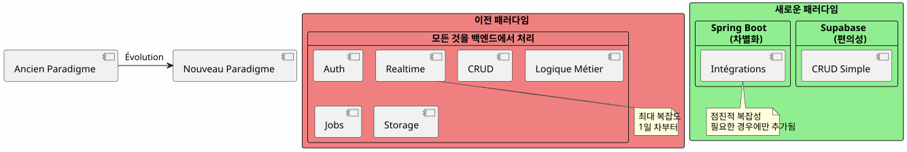
기본적인 원칙 :이미 서비스로 존재하는 것을 만들지 마세요. 당신의 애플리케이션을 차별화하는 것에 집중하세요.
80/20 법칙
대부분의 응용 프로그램에서:
-
80%의 운영표준 CRUD → Supabase
-
20%의 운영비즈니스 로직이 필요함 → Spring Boot
이 자연스러운 규칙은 하이브리드 아키텍처를 정당화합니다.
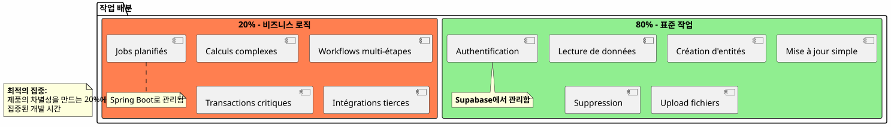
최종 결론
하이브리드 아키텍처는 기술적 타협이 아닙니다, 그것은전략적 결정.
다음과 같이 할 수 있습니다:
-
✅ 기능적인 MVP로 빠르게 시작하기
-
✅ 큰 투자 없이 시장 검증
-
✅ 복잡함이 요구될 때 점진적으로 발전하다
-
✅ 각 단계에서 비용을 관리하세요
-
✅ 각 기술의 장점 활용
-
조기 과설계 방지
-
✅ 미래를 위해 유연성을 유지
그녀는:
-
🎯실용주의: 그녀의 뛰어난 모든 기술
-
🚀속도: 최소한의 시장 출시 시간
-
💰경제가치에 부합하는 비용
-
🔮확장성당신과 함께 성장하는 아키텍처
-
🛡️견고성: 검증된 신뢰할 수 있는 서비스
다음 단계
이 아키텍처가 당신에게 와닿는다면, 여기서 시작하는 방법을 알려드립니다:
-
Supabase 계정을 생성하세요(무료)
-
최소 데이터 스키마를 정의하세요
-
OAuth2 인증을 구성하세요
-
당신의 첫 JBake 페이지를 만들어 API를 소비하세요.
-
GitHub Pages에 배포하세요
작동 가능한 MVP를 갖게 될며칠.
Spring Boot은 필요할 때 자연스럽게 올 것입니다. 그 이전에는 오지 않을 것입니다.
하이브리드 아키텍처는 필요한 것을 필요한 때에 정확히 구축하는 예술이다.
좋은 개발! 🚀_
"이 기사를 공유하면 다른 개발자들이 올바른 아키텍처 선택을 하는 데 도움이 될 거라고 생각한다면 공유해 주세요."
관련 기사
31 May 2026
14 May 2026